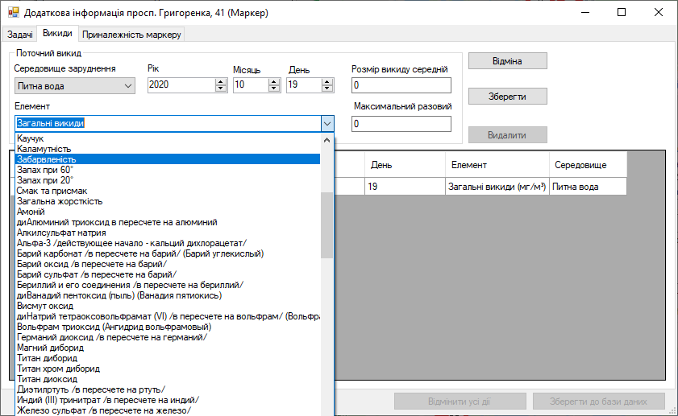
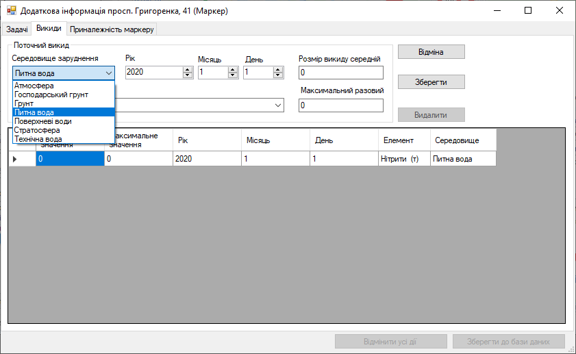
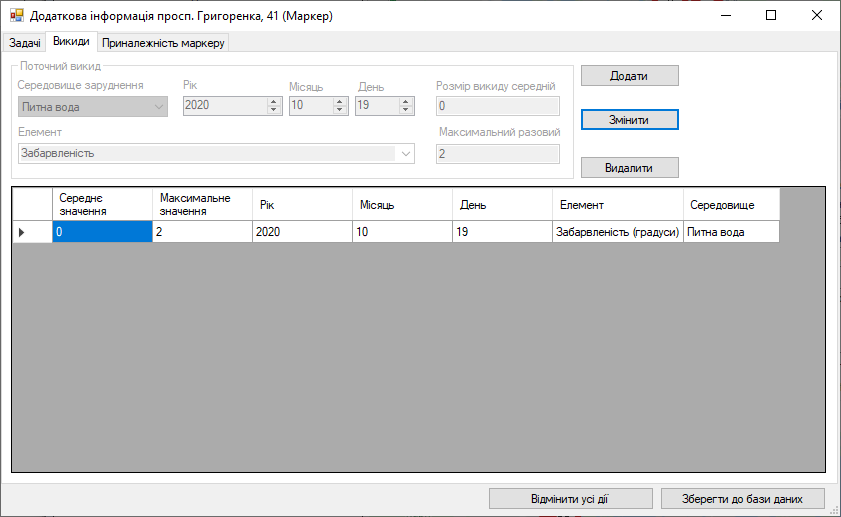
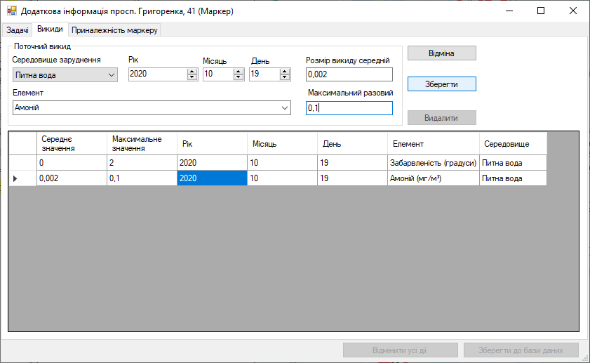

Крок 10. Вкладка «Викиди». Додання інформації
Важливо! Програма автоматично створює в таблиці запис, який редагує експерт змінюючи значення цього рядка у відповідному стовпчику, коли редагує дані, які містяться в компоненті.
Натискає на стрілочку у полі «Середовище забруднення» та обирає запис «Питна вода».
Потім вводить значення в поля «Рік», «Місяць» та «День», вони зазначені в джерелі як «Дата закінчення випробування».
У полі «Елемент» натискає на стрілочку вниз та обирає елемент «Забарвленість».
Поле «Розмір викиду середній» та «Максимальний разовий» заповнює даними з таблиці джерела даних.
Важливо! У всіх випадаючих списках з білим фоном є можливість пошуку. Ось як вона працює:

Натискає кнопку «Зберегти». Тепер збережено відредагований рядок таблиці та компоненти для редагування запису таблиці стали недоступні. А кнопка «Зберегти» змінилась на кнопку «Змінити».
Спробуємо додати ще один елемент, наприклад Амоній. Заповнюємо так само всі компоненти покроково.
Важливо! Дробові числа в поля «Розмір викиду» та «Максимальне значення» необхідно заповнювати через кому, а не через крапку, інакше програма зависне.
Якщо дані введено через крапку і програма зависла, то необхідно стерти всі введені дані, тоді записати ці дані через кому.
Якщо дані введено через кому і програма зависла, то необхідно стерти всі введені дані, тоді записати ці дані через крапку.
Зависання програми індивідуальне для кожного комп’ютера!